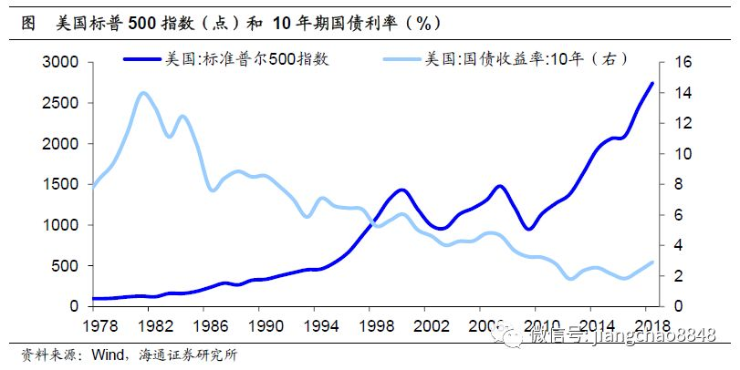

文化论
[英] 马林诺夫斯基
费孝通 译
前沿
- 行远者储粮，谋大者育才
- 应采用社会人类学者实地调查之方法
- 人和人的差异之处有两方面：体质（种族）和心灵（文化）
- 文化的各方面：
- 物质设备；人因为要生活，永远地改变着他的四周
- 精神方面的文化：器物和习惯形成了两大方面：物质的和精神的
- 语言：说话是一种人体的习惯
- 人类学：研究文化的特殊科学
- {功能学派，历史学派，进化学派}
- 以社会制度为文化的最终要素
科学
- 在科学中，最重要的事务是认识事实
- 人类有机的需要形成了“文化迫力”
- 饮食需要->用餐礼仪,食品生产制度
- 种族的延续->家庭生活,婚姻制度
- 求偶成了终身伴侣的选择.
- 教育的意义就在于训练后生如何应用工具及器物
- 表现于个人意识的是文化所养成的嗜好
- 风俗----一种依传统力量使社区分子遵守的标准化的行为方式
- 家庭设备和家庭组织间的关系
- 合作是牺牲私人的兴趣及倾向而服从一共同目的
- 知识的具体表现包括:艺术\手艺\技术上的程序\及工匠的规律.
巫术
- 巫术:属于宗教的范围;偶然的料想不到的事件
- 恋爱是一件富于情感又成败难测的企图
- 人只有在知识不能完全控制处境及机会的时候才有巫术
- 巫术用在不确定的地方:{种地,战争,恋爱,捕鱼,航海}
- 标准化的行为:仪式,标准化的语言:咒语;
- 让无出路的情感得到戏剧性的发泄
- 人类一旦被知识,经验,专门技巧所抛弃,便体认到自己的无能
- 巫术:自欺欺人的手段?
- 巫术的作用:增强自信心,信徒(权利和政治经济影响),
宗教信仰的作用
- 祸根在于人类的预测和想象,人类计划与现实的冲突;死亡的惧怕
- 文化可以使人格深深的改变
- 人类生活上的每一次重要危机都含有情绪上的扰乱,精神上的冲突,和可能的人格解组.
- 永生信仰是与人与人之间的关系和感情而发生的.
- 宗教使人的生活和和行为神圣化.
- 知识使人有预见, 而预见并不能克服命运的拨弄.
文化娱乐游戏的需要
- 游戏,运动和艺术的消遣,消除生活的紧张和拘束.能重振精神
- 最早期游戏的功能可说是教育,
- 人们为文化担负了许多艰难的工作之后,文化为他们备下一些补偿.
- 调剂一下单调的生活,减轻一些人生的担子
- 英国人爱运动,德国人爱游园散步.意大利人喜欢小旅社...
艺术在文化中的位置
- 艺术似乎是文化通忂中最闭塞,同时又最具有国际性和种族共通性的一种.
- 艺术在社会组织方面具有重要性
- 艺术对于技术,经济,科学,宗教,巫术都有影响.
- 艺术一方面由于人类在生理上需要一种情感的经验---声色形合并的产物.
- 个人所仿制的传统作品,总是在传统之上加入了一些新东西.
结论
- 文化是一种手段性的现实,为满足人类的需要而存在.
- 文化,人类累积的创造物.
- 文化手段迫力:个人必须遵守道德,秩序.必须服从社会传统.适应各种声音,
- 文化在满足人类需要的同时创造了新的需要.
- 高度物质繁荣的时期,往往在精神上是高度堕落的
人是一个制造工具使用工具的动物,一个在团体中能够传达交通的社员,一个传统延续的保证者,一个充作团体中的劳作单位, 一个留恋着过去和希望着将来的怪物,最后靠着分工合作和预先准备所获的的闲暇和机会.他又享受着色,形,声等所造成的美感.
想法:
- 美国的借债消费与金融投机:

- {人们在享受文化的同时也在被文化束缚,如同享受食物却失去自由}
- {文章看到了最后方显功力:分总结构}
文化与制度
- 文化的真正单位是社会制度
- 每一群在共同事业下结合的人必须住在一起
- 工作越联系,越亲密,则地方原则就越显著.
- 唯有认清了文化现实和文化历程的定律,我们才谈得上改造文化.
- 我们现在正需要一种经验的文化论
- 比较社会学
- 世间没有"自然人".人性的由来就在于接受文化的模塑.
- 我们愈明了差异性之下的雷同性.则我们愈能推测社会进步的趋势.并且或能实际的对人事有所指导.
新闻笔记
世界变局是我们的机遇，伟大时代是我们的底气。只要我们坚持以习近平新时代中国特色社会主义思想为指导，坚持稳中求进工作总基调，坚持推动我国经济实现高质量发展，坚持以供给侧结构性改革为主线不动摇，贯彻落实“巩固、增强、提升、畅通”八字方针，我国经济高质量发展之路必将越走越宽广
科学家的任务就是理解自然。科学家群体由知识探索者组成，他们用实验测试假说，这便是今天我们所说的“科学方法”。“理解自然”这个理念既能满足人类的好奇心，也能改善我们的生活
问题在于，很少有所谓的突破性成果能产生实实在在的进步。我们的量子计算机在哪里？癌症的“私人订制”治疗法在哪里？纳米机器人在哪里？我们怎么连暗物质的构成都还没弄清楚？
如果你能找到一个不靠胡扯、吹牛、撒谎或添油加醋就拿到经费的学者，我就可以找到一个敢跟系领导闹矛盾的学者。如果你不按行规玩儿，你在学校的表现就不好。因此，任何一个有道德感、坚持原则，不按规矩办事的人都混不好，这很可悲
真正可悲的是，如此显而易见的问题，竟然没有人采取任何行动
- 没有任何一个政治现代化的发达国家,是用自己本国的财政收入来承担本国的庞大上层建筑和社会制度的全部成本的.
- 艺术需求的规律是很难接受替代。差一点就是差，只有最好，没有次好，就是“一将功成万骨枯”。马太效应在艺术圈内非常显著
- 从文风上看，文件追求大而全、面面俱到，但具体该怎么做往往语焉不详
- 从执行上看，立法部门化，行政部门较大的自由裁量权无法真正体现市场化和法制化。
- 俄罗斯:正如混血儿一样，它魅力十足、多才多艺、貌美而孤寂
- 2018年可能是近15年来俄罗斯居民收入下降幅度最大的一年
- 普京今年元旦讲话所提到的“俄罗斯没有朋友"{俄罗斯百年孤独}
- 西乌克兰是天主教世界，东乌克兰则是东正教世界
- 普京的帝国心态深植于俄罗斯帝国历史土壤之中，而帝国梦想成真的关键则是走出并超越历史
ted
- 爱默生:在天才的脑海中,我们能重拾我们曾遗失的思想
- 坦诚的人会比常人更加阴沉\激烈\偏执\柔和;所以很少有人能够自我坦诚和自我观察.因此,愿意交流真知灼见的人也就少之又少.因此,艺术是人类的私密日记.因为我们都有一颗孤独的心.我们的挚友可能250年前就已经过世了.但我们同样应该努力在真实的现实社会中寻找真诚交流的方式.
- 艺术:绘画\雕塑\建筑\书法\摄影\音乐\舞蹈\曲艺\电影\电视\戏剧\戏曲\语言艺术:诗歌;散文;小说\
- 人类大脑的特别之处:大脑消耗了25%的能量
- 人类大脑有860亿神经元,160亿在大脑皮层;1.2-1.5kg
- 人类通过熟食,提供了大脑发展所需的能量基础.
- 如何改掉顽固习惯?{咬指甲,吸烟,零食}
- 人类每天45%的行为都是在同一时间同一地点重复同样的动作
- 习惯:模式化行为:减少思考量:节约能量
- 注意坏习惯发生时的心理状态或者思想过程
- 找到你的真正渴望,在慢慢形成新习惯